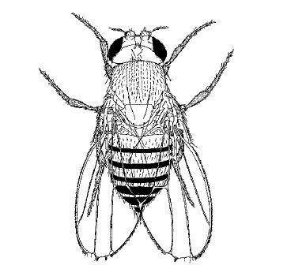
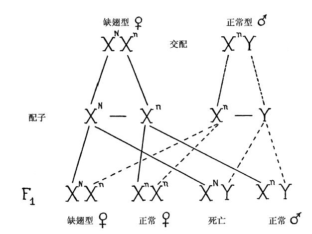
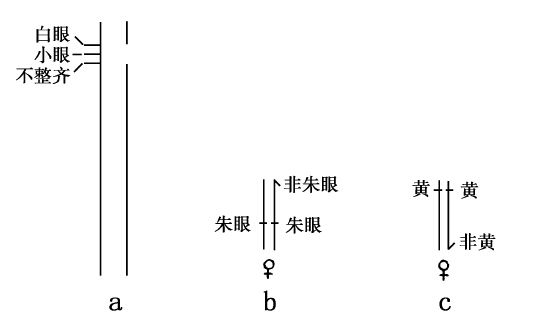
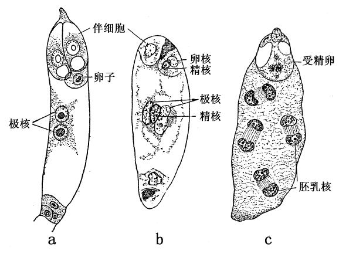
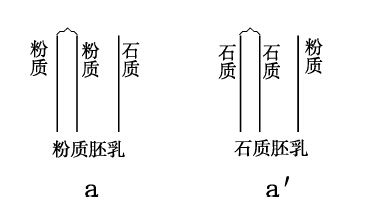

隐性性状与基因的缺失
无疑，在存缺理论下，潜伏着这样的一种观念，即许多隐性性状都是原型所固有的某些性状的真正损失，由此又推论到各该性状的基因也缺失了。这种观念是魏斯曼关于定子与性状的关系这个理论的残余思想。
现在就表面上似乎是拥护上述的若干证据，深入检查，是会有些裨益的。
人们可以把白兔、白大鼠或白豚鼠说成是失去了原型所特有的色素。在某种意义上，谁也不否定两型之间的关系，可以这样表示出来，不过顺便可以注意一下，在许多白豚鼠的脚上或趾上，还有少数的有色毛。如果产生色素的那个基因真不存在，又如果毛的颜色有赖于该基因的存在，那么，有色毛的存在，便不容易解释了。
有一个突变族的果蝇只有翅的痕迹，所以称为痕迹翅型（图10）。但是，如果该型幼虫在31℃左右进行发育，则两翅生长颇长，最长者几乎和野生型翅长相等。如果产生长翅的那个基因真不存在，则高温又如何能促其重生呢？
另有一族精选的果蝇，其中大多数无眼，少数具有小眼（图30）。培养愈久，则有眼蝇愈多，眼的平均体积愈大。基因多不会随着培养时间而变化，如果开始孵出的无眼果蝇缺少该种基因，则长期培养势不能恢复这个失去了的基因。退一步说，即使假定其可以恢复，培养较久的果蝇应该有更多的后代，有眼或者有比该族平均更大的眼。然而这样的事却没有发生过。
更有其他隐性突变型，其中性状的损失本身绝不明确。黑兔和灰色野兔对比，黑为隐性。事实上，黑兔比灰兔有着更多的色素。
又有产生纯白色个体的显性基因。白色来亨鸡就是由于这样的因子所引起的。这里所持的论调正好相反，据说野生型原鸡有一个抑制白羽的基因，失去那个抑制基因，便能发生白羽。这种论证虽然似乎言之成理，但是主张原鸡含有这一类基因的假设，似乎总有些勉强，并且从其他显性性状方面来看，这项论点实无可取，只是一种不惜一切代价来挽救该项理论的勉强企图而已。
应该回想一下，隐性基因和显性基因的区别大都是勉强划分的。经验证明，性状决不总是隐性，也不总是显性，相反，在大多数例子里，一种性状既不完全是显性，也不完全是隐性。换句话说，含有一个显性和一个隐性的杂种型，大概介于两种类型之间，即两种基因对于发生出来的性状都有一些影响。认清了这种关系，那么，主张隐性基因是一种缺失的理论便站不住脚了。诚然，在这样的例子里，也许有一些理由，认为杂种之所以有中间性，是由于一个显性基因的效应比两个显性基因的弱些，不过这种说法又会增加一个新的因素。这并不一定意味着，这个效应真正起源于一个缺失。要把它迎合这个假设，也许是能够做到的，但却不是一个必要的推论。
如果承认以上论证是合理的，那么，就可以不必考虑从字面上来解释隐性基因的意义了。不过近年来，已经出现了另一种对全部基因的效应同性状之间关系的解释，使反驳存缺理论更加困难。例如，假设染色体确实失去一个基因，又假设当这样的两条染色体会合时，个体上某种性状即有改变，甚至缺失。这种改变或缺失或者可以说成是所有其他基因联合产生的效应。决定结果的不是缺失本身，而是某两个基因缺失时，其他基因所产生的效果。这样的解释避免了关于每个基因单独代表个体上一种性状的那种相当幼稚的假设。
在讨论这项见解以前，应该指出：在某些方面，这项见解同大家所熟悉的关于基因和性状两者间关系的另一项解释相类似，事实上前说从后说而来。例如，如果把突变作用说成是基因组织内的一种变化，那么，当两个隐性突变基因存在时，新的性状并不起源于新基因的单独活动，而是全体基因（包括新基因在内）共同活动的最后产物，这同原有性状之起源于原有基因（即发生突变的那个基因）和其他基因，意义是一样的。
简短地说，第一种解释认为一对基因缺失时，所有其他基因产生了突变性状；第二种解释则认为当一个基因的组织改变时，新基因连同其他基因所产生的最后结果，才是突变性状。
近来获得了不少证据，虽然还不能说是对任何一种解释提供了一个决定性的答案，但对于争论中的问题却也有一些关系。由于这些证据揭露了一向没有讨论过的关于突变的某些可能性，所以这些论证本身也有被考虑的价值。
果蝇中有几个突变型原种，其翅端有一个或多个缺刻，第三翅脉加粗（图44），所以统名为缺翅。只出现了具备这些特征的雌蝇。凡具有缺翅因子的雄蝇一概死亡。缺翅因子位于X染色体上。

图44 果蝇的缺翅是一个显性的性连锁性状，又是一个隐性的致死性状缺翅雌蝇的一条X染色体上有缺翅因子，另一条X上具有正常的等位基因（图45）。缺翅雌蝇的成熟卵子，半数含一条X，另一半含另一条X。该型雌蝇同正常雄蝇受精时，含X的精子同含正常X的卵子结合，发育成正常雌蝇；含X的精子同含缺翅的X的卵子结合，发育成缺翅雌蝇。含Y的精子同含正常X的卵子结合，发育成正常雄蝇；含Y的精子同含缺翅的X的卵子结合，所得出的那种结合死亡。结果杂交一代的雌蝇对雄蝇为2∶1。

图45 示缺翅雌蝇X N X n 同正常雄蝇X n Y杂交。X N 代表含缺翅的
X染色体；X n 代表含正常等位基因的另一条X染色体
只就这一项证据来说，也许可以把缺翅当做一个隐性致死基因，在杂种体内起着一个显性的翅形修饰因子的作用。但以后Metz和Bridges（1917）以及Mohr（1923）先后证明：X染色体上缺翅突变所涉及的部分，比普通“基点突变”所影响的部分要大些；因为在一条X染色体上相当于缺翅的部分，如果有一些隐性基因，而在另一条X染色体上有缺翅，那么，这种个体便会表现这些隐性性状，好像缺翅染色体上的某一段已经缺失或者至少是不能存活似的（图46a）。实际上，结果正像真正发生缺失的时候一样的。在一些缺翅突变体里，“损失”的部分长约3.8个单位（从白眼基因的左侧到不整齐基因的右侧，参考图19）；在其他缺翅个体中，损失的部分包括较少的单位。在任何一种情况下，测验结果似乎意味着染色体在某种意义上已经失去了一小段。
前面提到，若干隐性基因和缺翅相对时便产生它们的隐性性状。把这些隐性当做缺失，而由所有其他基因产生效果，或者认为有了这些隐性基因，再加上所有其他基因联合产生效果，任一见解都符合事实。实验结果，对于两说的是非，无法决定。

图46 a.示缺翅染色体上基因的位置，右侧染色体上的断裂部分代表缺翅，左侧一条染色体上示白眼、小眼、不整齐三种隐性基因的位置，与缺翅相对；
b.示染色体的一段易位到另一条染色体上，两条X染色体都含朱眼基因，其中一条同朱眼的正常等位基因（即非朱眼）一段连接一起；
c.有两条含黄翅基因的X染色体，其中一条同黄翅的正常等位基因（即非黄翅）一段连接在一起但是这一区域内两个隐性所产生的性状，与一个隐性同缺翅缺失所产生的性状，其间存在着轻微的差异。这种差异之所以存在，似乎是因为一个真正的缺失（缺翅）加上一个隐性并不等于两个隐性。不过进一步考虑，证明：在所遗失的缺翅一段里面，缺少了某些基因，而在双隐性型里面，却有这些基因，两例结果上的轻微差异，也许是由于这些基因存缺所引起的。
在以上的例子里，关于缺翅突变体的X染色体缺少一段，只是单纯根据遗传学的证据推论出来的，还不可能从细胞学方面证明。下面的一个例子却证实了一个真正的缺失。
果蝇有时缺少一条第四染色体（单数-Ⅳ，见图29）。在某些突变原种里，第四染色体上有几个隐性基因。我们可以造出这样一种个体，在它的唯一的第四染色体上只有一个像无眼的隐性基因。这样的个体表现无眼原种的特征，但是作为一个类型来看，却比两个无眼基因存在时，更趋极端。这种差异可以归之于所失去的一条染色体上面其他基因的缺失。
在Bridges和摩尔根（1923）所称为易位的例子里，出现了另一种不同的关系。所谓易位（根据遗传学方面的证据），就是说染色体的一段脱离该染色体，而重新连接在另一条染色体上。该段继续存在，并且因为带有一些基因，所以增加了遗传结果的复杂性。例如，正常染色体上相当于朱眼基因点的一段，移接在另一条X染色体上（图46）。一只雌蝇的两条X染色体上各有一个朱眼基因，其中一条X染色体同易位的一段连接。这样的雌蝇虽然在那一段上有了朱眼的正常等位基因，但眼色仍然是朱色的。初看时，如果把朱眼基因当做缺失，则两个缺失对一个存在来说，似乎不能成为显性。但是进一步分析，却可能作出另一解释。因为朱眼色如果是由于朱眼基因缺失时所有其他基因的联合作用，那么，虽然有一个显性正常等位基因，也可以发生同样的结果。这种情况，不能同一条染色体上有一个朱眼基因、另一条染色体上有其正常等位基因的情况，等同起来。
这里所提到的关于两个隐性基因同移接段上一个显性基因的关系，并不是每次都能引起隐性性状的发育的。例如L.V.摩尔根所报道的另一个移位例子。X染色体上相当于黄翅楯片两突变基因区域的一段，移接到另一条X染色体的右端。如果有一只雌蝇，在它的两条染色体上各有黄翅和楯片基因，其中一条X并且和移位的一段连接，则该雌蝇会表现野生型性状。在这里，移接段上的显性等位基因抵消了两个隐性基因的效果。这就是说，所有其他基因，加上移接段上的种种基因，联合作用，扭转了不利于显性型的发育的形势。不论从以上任一个学说来看，这都是应有的现象。
在玉蜀黍的三倍型胚乳和一种三倍型动物里，也研究过两个隐性基因同一个显性基因的关系。玉蜀黍种子胚乳的细胞核由一个花粉核（含单倍染色体）和两个胚囊核（各为单倍）联合组成。结果，得出一个三倍型核（图47），以后经过分裂，产生了胚乳细胞的三倍型核。粉质玉蜀黍的胚乳由轻柔的淀粉组成，石质玉蜀黍的胚乳则含大量的角质淀粉。设用粉质玉蜀黍为母方（胚珠），用石质玉蜀黍为父方（花粉），则子代植物的种子都有粉质胚乳。由此可见两个粉质基因对一个石质基因，呈显性作用（图48a）。若配合方式相反，用石质为母方，同粉质花粉杂交，则子代种子的胚乳都是石质（图48b）。这里，两个石质基因对一个粉质基因，呈显性作用。两种基因中，究竟把哪一种当做另一种的缺失，这是由你任意选择的。如果损失的是粉质基因，则在第一个例子里，两个缺失对于一个存在来说是显性，而在第二个例子里，两个存在对于一个缺失来说却是显性。

图47 a.植物胚囊内卵核受精的三个时期；b.示母方的两个单倍型核同父方的一个单倍型精核；c.示三核联合，产生三倍型胚乳，（仿Strasburger与Guinard，Wilson提供）

图48 示玉蜀黍的三倍型胚乳。
a.示两个粉质基因和一个石质基因存在时，产生粉质胚乳；
a′.示两个石质基因和一个粉质基因存在时，产生石质胚乳
如果仅从字义来解释两个缺失比一个存在占有优势，这种说法是毫无意义的。然而如上所述，如果一个基因缺失时其他基因共同决定粉质性状，这种说法还是可能解释得通的。又如粉质基因存在（由石质基因突变而成），该基因联合其他基因，产生效果：这一个提法也当然同样解释得通。因此，从三倍型胚乳得来的证据，正像一段染色体移接时增加第三者的移位例子一样，也不能决定隐性究竟是某一基因的缺失，或者另有其基因的存在。
玉蜀黍中有几个例子，其中两个隐性要素对一个显性，并不占优势。不过这些例子对于当前问题没有关系。
如果三倍型雌果蝇的两条X染色体上，各有一个朱眼基因，另一条X染色体上有一个红眼基因，便会得出红色眼。这里，一个显性基因对两个隐性基因占优势。这种结果，与重复段上的一个野生型显性基因同两个朱红基因对立时所产生的结果，互相背驰。不过三倍型几乎增加了一整条X染色体，而重复型只增加了一小段X染色体，所以两种情况并不完全相同。额外X染色体上的基因过剩，可以说明两例之间的差异，不论是把隐性基因解释为真正的不存在，或者解释为一个突变了的基因，都是言之有理的。